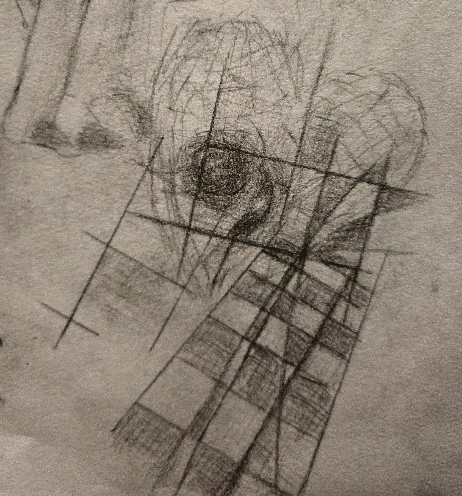

It’s real inside, or maybe the scalding of scaffold slip strings in my shaking slip squeeze sound sutcher. Rattle me red till I am blue in the head. Sweat coat wears a man strung out a little empty. Soaking print finger patterns makes me hurl. Who is me and you? Where am I?
Ab innominatis, ex capite furenti, et deorum damnatio.
Meum numen in absentia, hoc verbum divinum.

How does it think? Is that me? I know. A mean while stir-some with something thinkless. So sulking; keep-less in uppity beautiful fall-fulls, and after all of what...? Whatness? I forgot, like it is over null, nulling contentful love muddles in bedtime cell-ground; fucking sick. Contentful fucking sickness. Fucking consented me into? Into what?
Lulling and lugging sing-song lullabies.
Forgot.Forgot.Forgot.
Miss shaped loves me, by meander all the after. Overless, being into hurt. Exo-fevers geneo ripping, geo-stitching linklessly. Your fall smokestack con-coffinlike curdle coughing leads.
You still couldn’t find your way out of the delusion; dead. Deeper through. Feeling not. Dead. Beautiful.
Seeing you let go without me was ugly; knowing you better. Sinking without me. Let me join your feelings not. My love has me convinced we can follow each other wherever, and we don’t have to be happy to. Miserable company, bury me with beautiful angel eyes and their dissociative spine talkless. The knowledge of not having for the meanwhile is a sad bliss; I forgot.
I forgot with the smiles that we think mean something. Caring about little tendrils and endless pump wires called me. You lift me up and down without grounding me. Forever meaning me to, but without me; without you, there is me, and without me, there is you. I black out too much love; I’ll black out with you. Another forever longness.
Use me current, carry me carelessly, and give me my body poisoned freedom; I don’t care. I don’t. I romanticize you. It has been a long dear.
What is dead but being deep in beautifully forgotten? I know it is wrong, love, to go back, but I need the fever to sweat coldly bad. This is religion: my analog chemical research, unlike what those who read into it, where crystal leads become smokestacks of sleepy distances above my restless body knotting. I see myself moving from afar, beneath soft, sick-hued yellows out from lamp shade reminders across brown carpet hugging myself.
I cannot undo the current; I am pulled away. I will find you like I always do, even if I am dreaming. Not the promises I used to make to you.
Should I stop? No. Of course, I cannot swim on my own. Not without your control can I ever know. I will find you. You promised me you would come back, even when you are dead. I can drown in dissolve, even into finding you. I have been falling until you show me. Maybe this is how.
Should I take more? More again? Yes, because this is how. I want to. I need you. Need. This is who I am: yours without you. You showed me these things, and it was this way, the way you told me to take it. You said to do this for visions. Until you are here, I cannot stop. I better remember this side of you than the other I cannot remember. The world entices me into finding the part of you darkened, as my new self lost mirrors.
I hear the empty blackout crescendo mirrors fever out the skin, through heart attack wave tingles. Dark. Finger sweats... Breathe. In for three. Three... Three. Three!
Like childhood. Floating away. Disappearing. Fast!
The usual way we see; not now.
Vanishing.
Far away.
Far.
Away.
Far away.
Vanishing.
I c a n t s e e
“Someone’s screaming doesn’t STOP!”
Distant organ noises. Ton weight chest stomps.
Tingling floats weightlessly carry, he is into heart attack tingles. Heart attack; attacking; heart! Flat-out disconnect from; body thuds from drop.
Installs speak vision tackles; God.
“Shut up!”
It’s real, like God. Drumming my neck loud. Loud!
Carpet color.
Identity: in blocks now with room stuff. Nothing now.
Room stuff everywhere. What is all of that stuff? There is a thing over there on the floor? Oh wait, that is me. How do I know that? I mean that is over there, yeah. Fuzzy ground.
Blue in head. Red rattles out the head.
Dissolve. Hello? Cold. Sweats. Where? Calling somewhere. Misshapened. Knotts. Cubed. Identity stuff. Where?
Drums too loud. Stop. Why do I remember this? Stop. STOP!
Fast.
Stop!
Dead?
There is human stuff over there.
“Do they look like an angel to some?”
Who said that?
Love? Please. Find love.
Flesh over there.